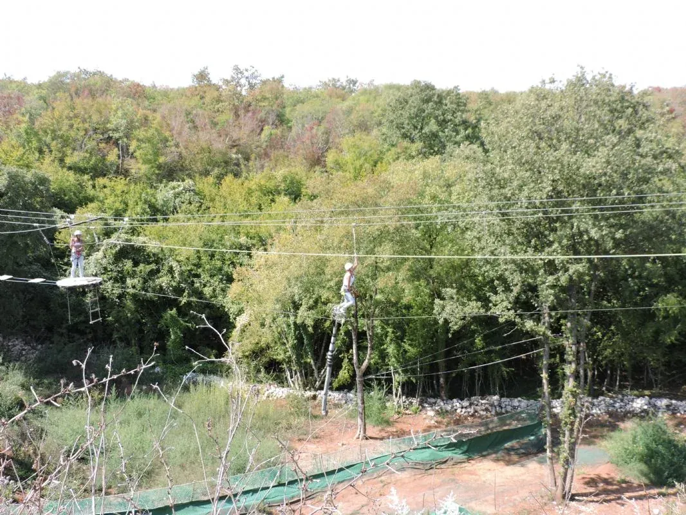
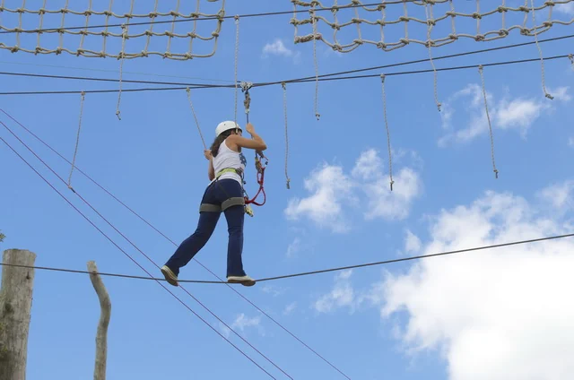
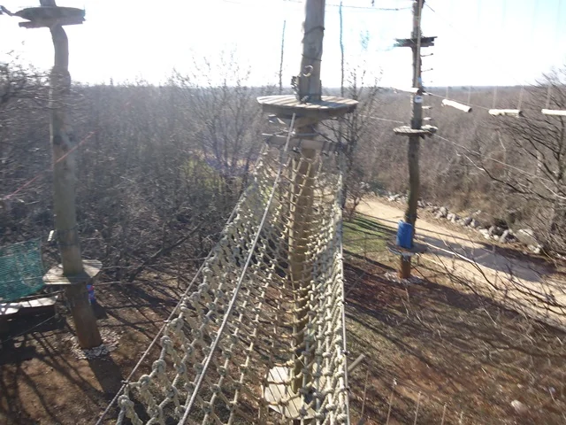
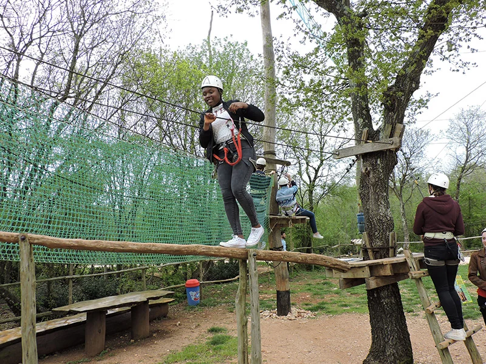

Once you've completed the yellow and blue routes — or when you're already experienced at our adventure park — it's time to head to the Devil's Causeway Course and cross it on a unicycle. You ride a skateboard first, then cross a wooden slatted bridge before the unicycle — the most difficult part of the park.
If you weigh more than 85 kg or aren't tall enough to reach the unicycle pedals, this game may not be suitable; you can walk on the wire instead. Staff guide you through seat adjustment, balance, and pedalling — hold the safety rope with one hand and the seat with the other. After the unicycle, complete a ropeline and a simple Japanese bridge. The giant swing is the best game to do next.
The park's toughest challenge
The Devil's Causeway Course is the black-route finale — skateboard, wooden bridge, unicycle crossing, slackline, and Japanese bridge. It rewards visitors who have already built confidence on the yellow and blue routes. The unicycle section is unique in Croatia and the most technically demanding part of the park.
Weight limit 85 kg applies to the unicycle bridge; staff can advise alternatives. Allow extra time for this course — many guests pause to watch others tackle the unicycle before trying themselves.
Planning your visit
Glavani Park is at Glavani 10, Barban — about 30 minutes from Pula, 45 minutes from Rovinj and Rabac, and 50 minutes from Poreč. Free parking is on site. The park is open daily 9 AM–5 PM with last entry at 3 PM, so allow three to four hours for the whole park.
For Devil's Causeway Course and our other attractions you can book tickets online for groups up to 6 or call ahead for larger parties with group discounts. See packages and prices — whole park incl. catapult €60–70 (children/adults), whole park without catapult €40–50, training route + 2 games €20–30, small groups 3–6 from €180.
Safety and equipment
Every activity at Glavani Park is instructor-led. Equipment is CE-certified and checked daily. You receive a harness, helmet, and clear briefing before you start. Read more on our safety page.
Packages from €20 children / €30 adults · small groups 3–6 from €180 · book online for up to 6
Visitor photos — Devil's Causeway Course


